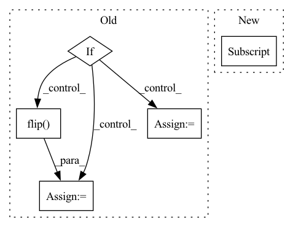

Pattern ID :1172

Before Change
images = F.upsample(images, size=(input_size, input_size), mode="bilinear", align_corners=True)
gts = F.upsample(gts, size=(input_size, input_size), mode="nearest")
if config["consist"]:
flipped_img = torch.flip(images, dims=[2])
flipped_gt = torch.flip(gts, dims=[2])
images = torch.cat([images, flipped_img], dim=0)
gts = torch.cat([gts, flipped_gt], dim=0)
Y = model(images, "train")
loss = model_loss(Y, gts, config) / ave_batch
After Change
bar = Bar("{:10}-{:8} | epoch {:2}:".format(net_name, config["sub"], epoch), max=num_iter)
config["cur_epoch"] = epoch
config["iter_per_epoch"] = num_iter
st = time.time()
loss_count = 0
In pattern: SUPERPATTERN
Frequency: 3
Non-data size: 5
Instances
Fragment ID: 5878360
Project Name: moothes/salod
Commit Name: c6e847a82c0557c08aec2d16ef9236123b83719f
Time: 2022-08-18
Author: zhouhuajun123@126.com
File Name: train.py
M Class Name: AnonimousClass
N Class Name: AnonimousClass
M Method Name: main(0)
N Method Name: main(0)
M Parent Class:
N Parent Class:
M File Name: train.py
N File Name: train.py
M Start Line: 28
M End Line: 104
N Start Line: 38
N End Line: 113
'>
Before Change
crop_augment=False,
cutout_augment=False):
frames = []
if os.path.isdir(path):
for i in range(start, start + length):
img = cv2.imread(os.path.join(path, "{:05d}.jpg".format(i + 1)))
// fill in the missing frames with a previous frame or zeros
if img is None:
if len(frames) > 0: img = frames[-1]
else: img = np.zeros((112, 112, 3), dtype=np.uint8)
if crop_augment: pass // TODO: implement random crop
if mirror_augment: img = cv2.flip(img, 1)
// TODO: add temporal augmentation (repeat, deletion)
frames.append(img)
else:
cap = cv2.VideoCapture(path)
cap.set(1, start)
nb_frames = 0
while True:
ret, img = cap.read()
assert ret, "exception: {}, start={}, length={}".format(path, start, length)
if crop_augment: pass
if mirror_augment: img = cv2.flip(img, 1)
frames.append(img)
nb_frames += 1
if nb_frames >= length: break
seq = np.stack(frames).transpose(3, 0, 1, 2).astype(np.float32) // THWC->CTHW
if cutout_augment:
After Change
crop_y = random.randint(0, 16)
img = img[crop_y: crop_y + 112, crop_x: crop_x + 112]
else:
img = img[8: 120, 8: 120]
if mirror_augment and is_training: img = cv2.flip(img, 1)
// TODO: add temporal augmentation (repeat, deletion)
frames.append(img)
seq = np.stack(frames).transpose(3, 0, 1, 2).astype(np.float32) // THWC->CTHW
'>
Fragment ID: 5878363
Project Name: sailordiary/m3f.pytorch
Commit Name: 639f60090b44d3fdb3b40ae0df467ffed523da9e
Time: 2020-02-01
Author: me@sailorzhang.com
File Name: models/dataset.py
M Class Name: AnonimousClass
N Class Name: AnonimousClass
M Method Name: load_video(7)
N Method Name: load_video(6)
M Parent Class:
N Parent Class:
M File Name: models/dataset.py
N File Name: models/dataset.py
M Start Line: 50
M End Line: 75
N Start Line: 47
N End Line: 70
'>
Before Change
rnd_value = random.random()
for idx, (f, m) in enumerate(zip(frames, masks)):
if rnd_value <= 0.25:
frames[idx] = np.flip(f, axis=0)
masks[idx] = np.flip(m, axis=0)
elif rnd_value <= 0.5:
frames[idx] = np.flip(f, axis=1)
masks[idx] = np.flip(m, axis=1)
elif rnd_value <= 0.75:
frames[idx] = np.flip(f, axis=(0, 1))
masks[idx] = np.flip(m, axis=(0, 1))
return frames, masks
After Change
for idx, (f, d, m) in enumerate(zip(frames, depths, masks)):
if rnd_value <= 0.5:
frames[idx] = np.flip(f, axis=1)
depths[idx] = np.flip(d, axis=1)
masks[idx] = np.flip(m, axis=1)
return frames, depths, masks
'>
Fragment ID: 5878395
Project Name: hzxie/rmnet
Commit Name: f2f1bb1173f92817fb43222e870a07e61add9c76
Time: 2020-05-08
Author: root@haozhexie.com
File Name: utils/data_transforms.py
M Class Name: RandomFlip
N Class Name: RandomFlip
M Method Name: __call__(4)
N Method Name: __call__(3)
M Parent Class: object
N Parent Class: object
M File Name: utils/data_transforms.py
N File Name: utils/data_transforms.py
M Start Line: 114
M End Line: 127
N Start Line: 114
N End Line: 123